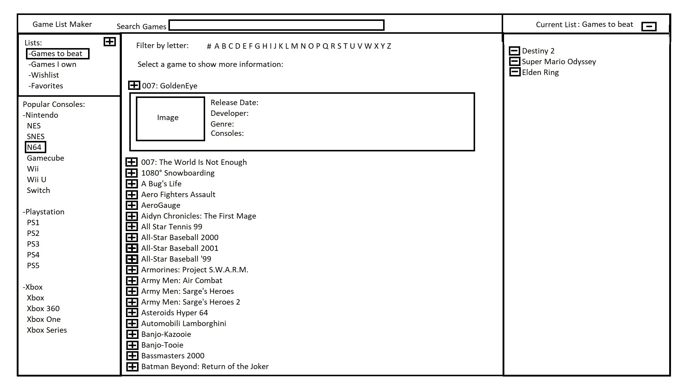

I read through the reading which really helped as we did the sound parts of the team project this week. I also updated the Quiz Ninja project to have the high score which saves to local storage. The drum kit activity was really fun and I learned a lot from my team mates as we worked on it together. I also spent some time working on the block 2 challenge project and getting ready for it. I have an idea that i think will work and I hope I could get it made over the next few weeks (more details below).
Hang Ups
I wasnt able to make any progress early this week until I had the procedure to blast my kidney stone. That took away some of the time to work on the assignments this week. One of the issues I ran into was that our group project background image was not working once I added it to my site. I kept getting a 403 forbidden error even though its the same URL that you can search and see the image. I finally resorted to saving a copy to my site itself so that it will load properly. The "modern front end development workflow" part of the reading this week didnt go well for me. I understand what it was trying to have me do but after installing Node and using the start command it did build the directory but had some errors and i couldnt get the local host to show the site properly.
Block 2 Challenge Proposal details
Wire Frame example

Purpose: I think id like to build a basic app that lets you keep track of video games in a list (possibly a list of games to play and games beaten). It will pull info on the games from a API called RAWG which has 500,000+ games with their details.
Audience: this would be for anyone who has interest in videogames and wants to browse them and make lists. I.E. list of games beat this year, list of games i want, list of games i still need to play.
Data Sources: I found a public API called RAWG games database . I think i will also use local storage to save the lists between sessions.
Initial Module List:
setup - pulls data from the API and gets info from local storage to display
display - this function will display the results to the page
createList - this function will serve to create a new list
addToList - funciton to add a game to the current list
removeFromList - function to remove a game from the current list
deleteList - function to delete an entire list
refreshDisplay - function to refresh displayed information after selections have been made
search - gather results of a search and send to display or provide an error
Functionality:
Search box at top of screen for easy searching
Navigate, create new list, or select an existing list
List navigation and console navigation are shown in the left bar
The highlighted list will be the one that changes are made to
if console is selected the list of games shows in the middle panel with alphabetical navigation
games can be selected for more details
using the addition button will add a game to the list displayed in the right panel
games can be removed from the list by using the remove button at the top of the right panel
Schedule:
Week 1: Get connected to the API and get it to list data (details and images)
Week 2: get the search feature working (this will also allow for preset searches ie side bar)
Week 3: Build a list feature which can save to local storage
Week 4: build out addition features like add and remove and delete
Week 5: style the site to display correctly with smooth UI and looks appealing to use